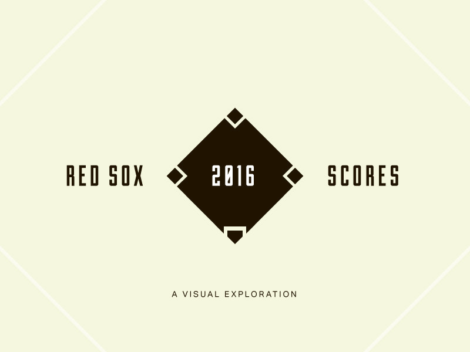

by Dan Perrera
On Sunday the Red Sox wrapped up the their 2016 regular season. Amy and I, as Fore Design, have followed the season and made data visualizations for every game (162 in all) and have been posting our work on Dribbble. Starting with their 800 x 600 pixel size constraint, we made two rules: scores must be posted before the first pitch of the next game and must include, at a minimum, the date of the game and the final score.

Our aim was to explore the intersection of our two favorite things — design and baseball — and it turned into an exciting challenge to produce compelling visualizations out of data that was largely the same from day-to-day. We knew at the outset that this project would be a tough given the length of the season — and were reminded of it every time we told someone about it.
It took a few weeks to find a balance between our client work and producing something everyday that we could be proud of. We learned to schedule around day games, follow our instincts, and resolve ideas quickly.
Looking back over the course of the season, it’s fun to observe recurring ideas, inspirations, style trends, and the evolution of our work. We explored simple shapes, line drawings, complex graphs, evocative illustrations, typography, and more. It’s amazing to see how much breadth we achieved.
While it’s easy to view projects like this as a distraction, taking a break from our everyday projects to work on this was immeasurably beneficial. It sharpened our skills, honed our thinking, and will inform our work going forward.
Dribbble was the perfect venue for this project. The community really encouraged us along the way and the positive feedback we received helped us stay energized throughout the season.
As the Red Sox are headed to the post season, so is our project! We hope you follow along.